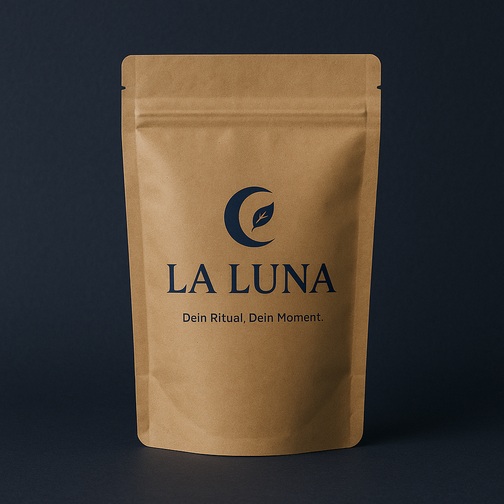
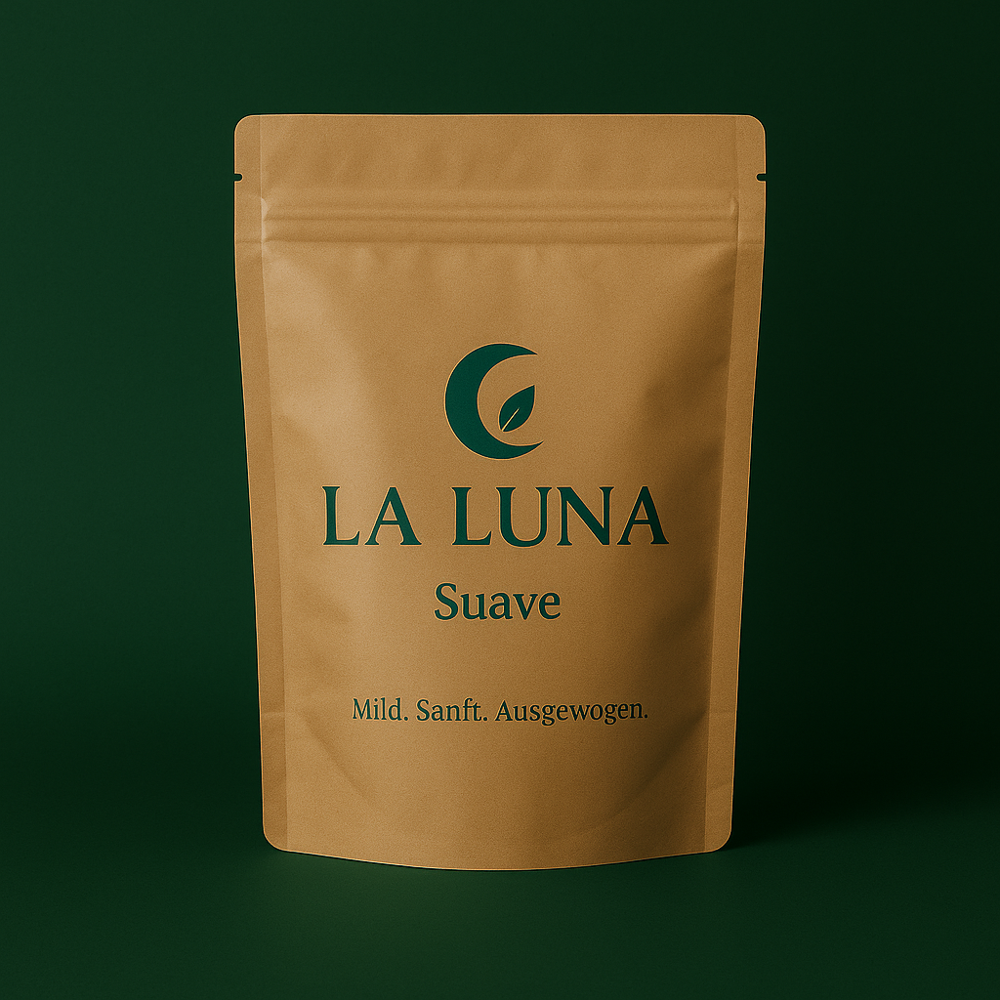
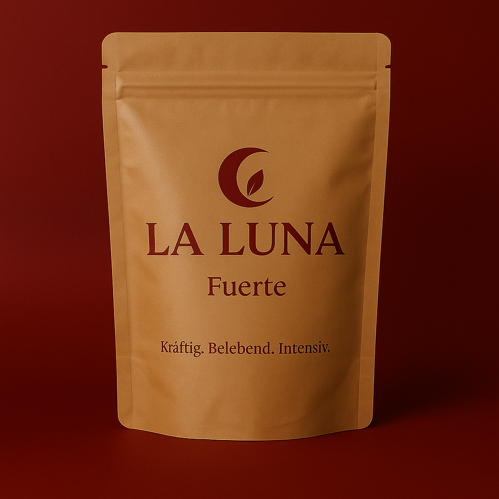
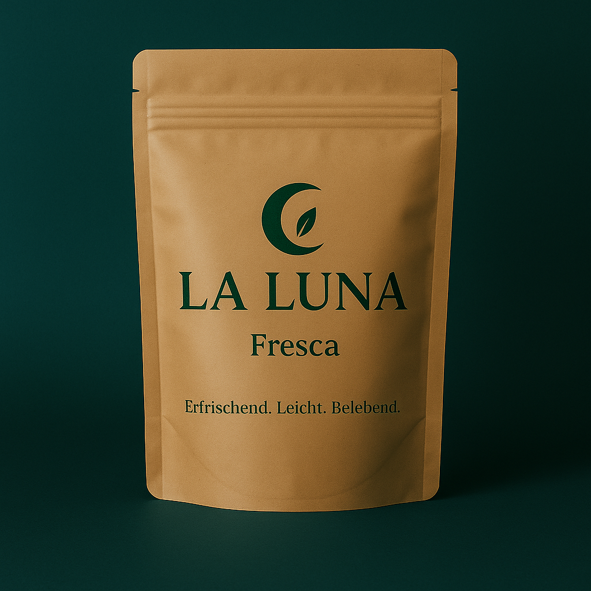

LA LUNA - Clásica

Traditionell. Ausgewogen. Zeitlos.
Die klassische Yerba-Mate-Mischung – pur, authentisch und voller natürlicher Energie. Der ursprüngliche Geschmack Südamerikas für dein tägliches Ritual.
LA LUNA - Suave

Sanft. Ausgeglichen. Natürlich.
Eine milde Mate-Variante mit weniger Bitterstoffen – perfekt für Einsteiger oder ruhige Momente. Sanfter Geschmack, voller Charakter.
LA LUNA - Fuerte

Kräftig. Wach. Direkt.
Unsere intensive Mate-Mischung mit extra viel natürlichem Koffein – für Tage, an denen du volle Power brauchst. Herb im Geschmack, stark in der Wirkung.
LA LUNA - Fresca

Erfrischend. Leicht. Sommerlich.
Unsere belebende Sorte für heiße Tage: mit Minze angereicherte Yerba Mate, perfekt für Tereré – den traditionellen, eiskalten Mate-Aufguss. Natürlich frisch, sanft im Geschmack und ideal zum Teilen.